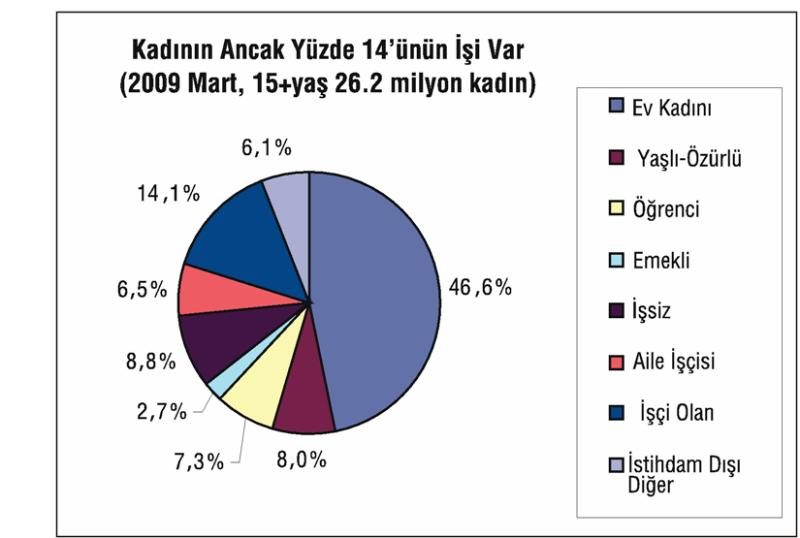

İşsizlik yangını, hem dünyada hem bizde, hızla büyüyor. Ekmeğin peşindeki erkeklerin işsizliği uzadıkça evdeki kadınlar da işgücü pazarına daha çok çıkmaya başladılar. TÜİK verileri, her ay, işgücü piyasasına biraz daha çok kadının çıkıp iş aradığını gösteriyor. Tütünde, fındıkta, çayda, kısaca tarlada çalışan kadını "ücretsiz aile işçisi" diye, işi olan nüfus içinde gösteren TÜİK, yıllarca bu yolla, kadının işgücüne katılım oranını yüzde 30 gösterdi. Bu çarpıklık, tarımdaki gerileme ile ve kentlere göçle azalsa da hala geçerli. Hala 5,4 milyon görünen kadın istihdamının 1,7 milyonunu, yani neredeyse üçte birini kırda, çiftte-çubuktaki kadın oluşturur. Oysa, gerçek kadın istihdamı 3,7 milyondan ibaret. Bu, kadın nüfusumuzun sadece yüzde 14'ü demek. Kadının büyük işsizliği demek...
35,5 milyon kadın nüfusumuzun 26 milyondan fazlası 15 yaş üstü yaşta. Normalde, bu, bir ülkenin gelişmesi için çok önemli bir değer, bir potansiyel. Ama yararlanmasını bilene... 15 yaş üstü kadın nüfusumuzun 5 milyonu, ya da yüzde 18'i öğrenciler, emekliler, özürlü-yaşlılardan oluştuğu için çalışabilir nüfus değil. Geri kalan 21 milyon kadının profili ise şöyle: Neoliberal gericilikle pekişen erkek egemen toplumun geleneksel işbölümü, 12,2 milyonu "ev kadını-ev kızı" olarak görevlendirip eve kapatmış durumda. Bunlar, bir tür ücretsiz ev işçileri... Erkek işgücünün iş dışı her tür ihtiyacını karşılayarak işverenlere her sabah yeniden gönderiyorlar.

Kaynak: TÜİK
Tarlasında çalışan 1,7 milyon kadın da "çalışıyor" sayılırsa, 9 milyon kadının 5,4 milyonu istihdam içinde sayılıyor. Kalan 3,6 milyon kadın yine atıl, yine işsiz. Bu varsayıma göre kadın işsizlik oranı yüzde 40'ı buluyor.
Tarlada çalışanlar dışarıda tutulursa, 9 milyonun 5,3 milyonu yine atıldır, işsizdir. Evet, gerçekte 5 milyonun üstünde kadın nüfus (ev kadını filan değil) gerçekte işsizdir... Böyle bakınca kadın işsizlik oranının gerçekte yüzde 59'a kadar çıktığı görülür.
TÜİK, resmi olarak kadın işsiz sayısını 1 milyon dolayında gösteriyor. Bu, yüzde 16 gibi bir işsizlik oranı. "Sayılmayan işsiz" olarak yani "ümidini yitirmiş, iş olsa çalışırım" diyen kadın işsiz sayısını ise TÜİK 1,3 milyon olarak gösteriyor. Bu durumda TÜİK'in resmi kadın işsiz sayısı bile 2,3 milyonu buluyor. TÜİK'in bu tanımla beraber resmi kadın işsizlik oranı da yüzde 30'u gösteriyor, ki bu bile yeterince ürpertici...
26 milyonluk kadın değerini böylesine ahmakça, hoyratça kullanan çarpık Türkiye kapitalizminin erkek egemenlerinin, istihdam edilmiş kadınlara işyerlerinde adil davranması tabii ki beklenemezdi. 3,7 milyon kadın çalışandan 3 milyonu ücretlidir ama bunların sadece 2 milyonu sigortalı-kayıtlıdır. 1 milyon kadın ücretli, kaçak ve çoğu kez asgari ücretin bile altında köle ücreti ile çalıştırılır. "Yönetici" pozisyonunda olan kadınların sayısı sadece 166 bindir. Kadının iş bulabilme şansı, erkekten daha eğitimli olmasıyla mümkündür. Bu da muazzam bir engelli koşuyu tamamlayanlara nasip olmaktadır ancak.
Kadınların, bu çift katlı adaletsizliğe iki kez diş bilemesi, kendini iki kat daha fazla alacaklı hissetmesi gerekir. Kadının bu düzenden, iki kat daha fazla hesap sorma hakkı var.